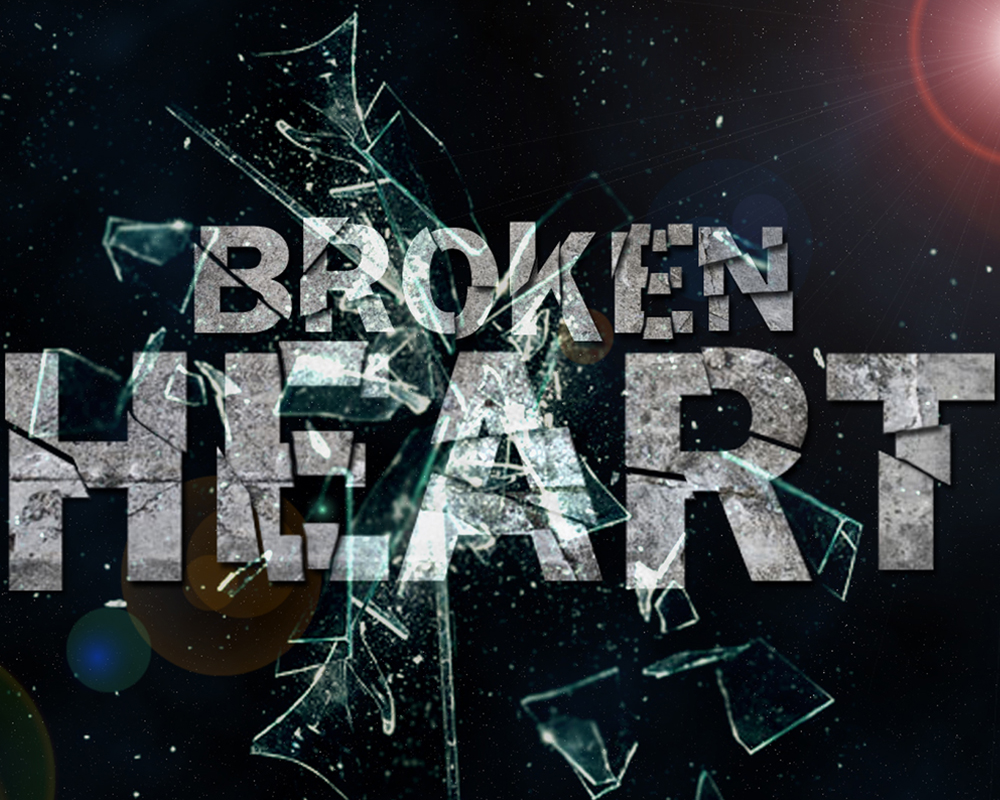
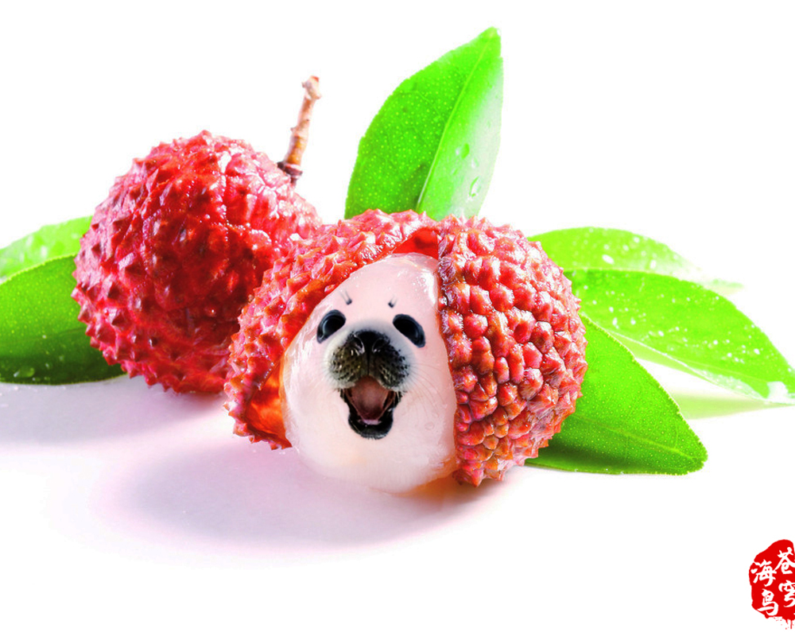

Broken Heart
June, 2014
This was one of my early Photshop works. I combine broken glasses, broken rock and the universe as the background to express my feeling at that period. More Details
Water Clones
July, 2014
After being more familiar with photoshop, I start to mix the special effect within it. This is one of the project I made at that time, it seems like I use water to clone another me... More Details

Litchi Sea Dog
August, 2014
Then I start to try to combine different things together. This picture is a combination of litchi and sea dog, which seems cute and tasty... More Details